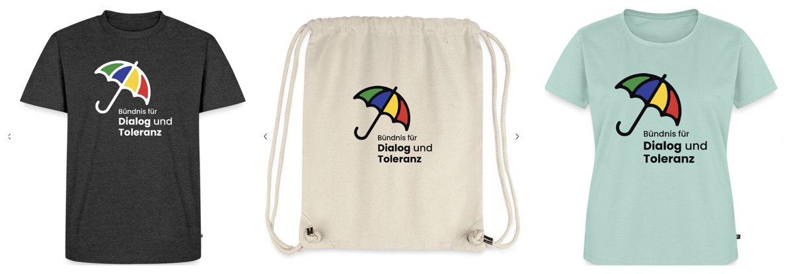
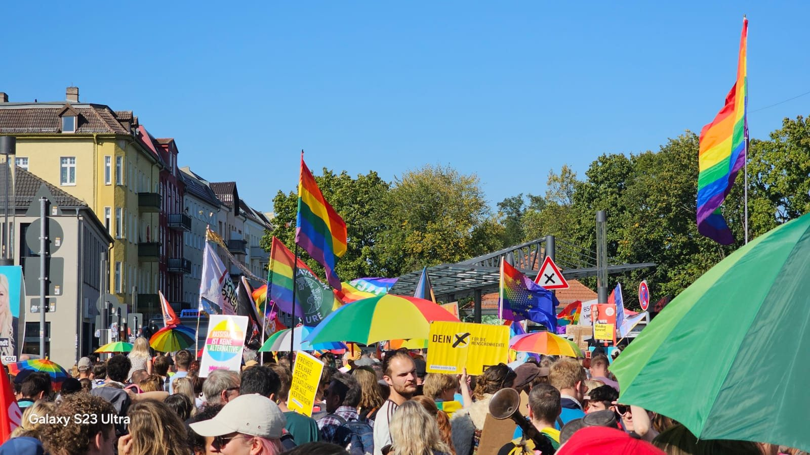
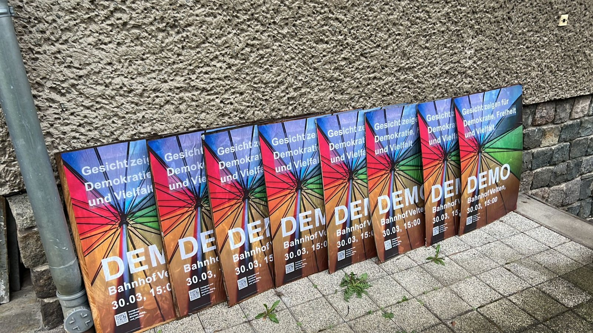
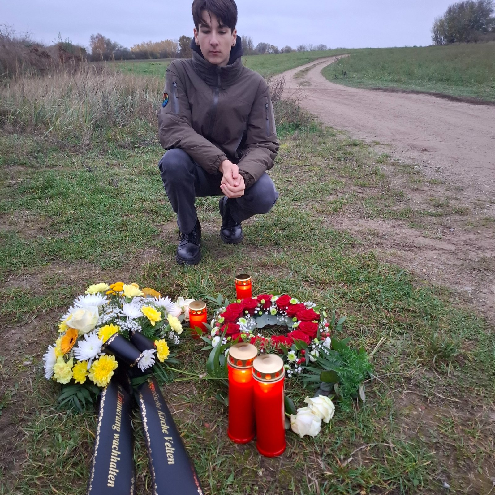
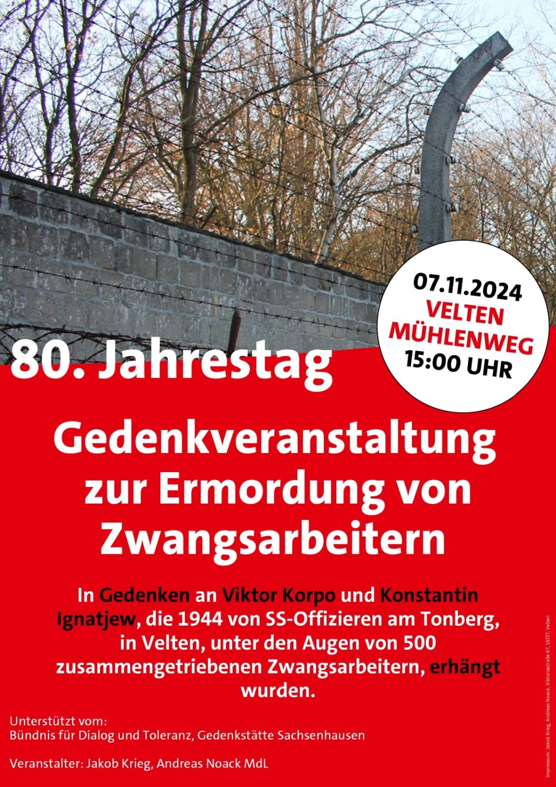
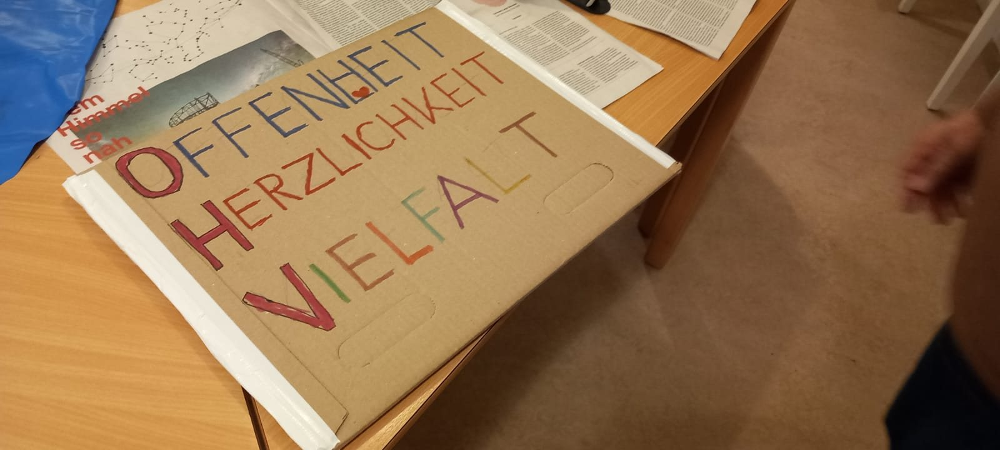
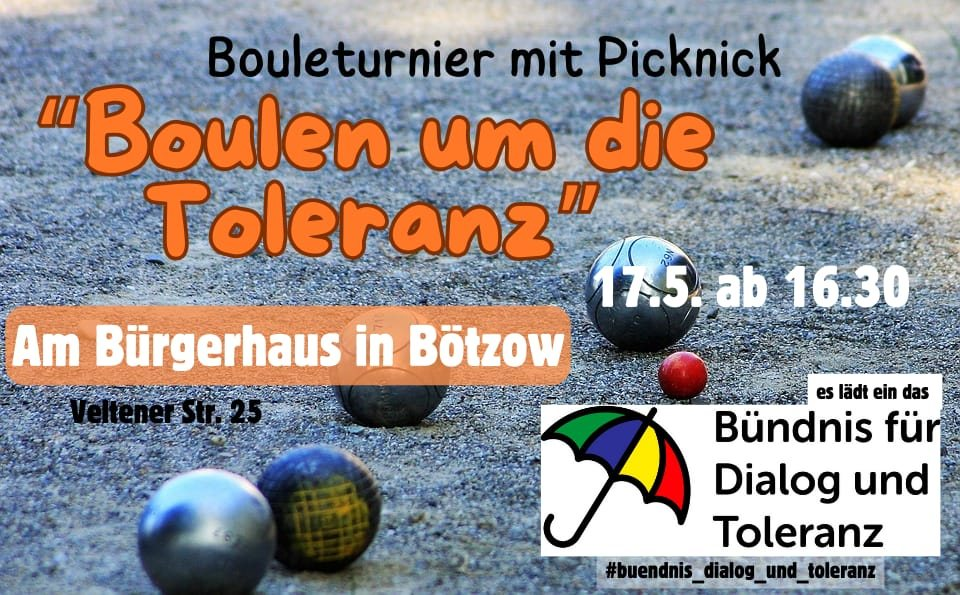
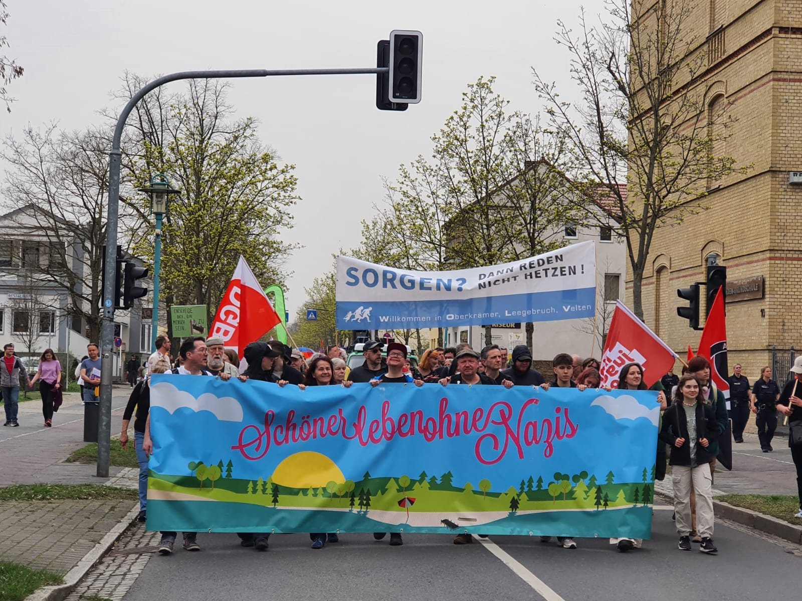

Bündnis fürDialog und Toleranz
Seit 2023 treffen wir uns als Gruppe engagierter Menschen aus Velten, Oberkrämer und Leegebruch. Unser Wunsch ist es, unsere Wohnorte als lebensbejahende, offene und fröhliche Orten zu erhalten und diese Seite sichtbarer zu machen. Die Werte und Ziele des Bündnisses haben wir festgehalten in einer
Präambel
Wir sind ein offenes Bündnis von Menschen aus Velten, Oberkrämer und Leegebruch mit unterschiedlichen politischen, religiösen und gesellschaftlichen Positionen. Für uns sind die Individualität, die Würde jedes Menschen, der Anspruch auf eine selbstbestimmte Zukunft und gleiche Rechte Ausgangspunkte unserer Arbeit.
Diese Haltung bestimmt unser Engagement in unseren Heimat- und Wohnorten.
Wir setzen uns ein für eine offene und freie Gesellschaft, in der Solidarität und Verbundenheit eine zentrale Kraft darstellen.
Wir machen uns stark für eine Wertegemeinschaft, in der Menschen respektvoll und auf Augenhöhe in den Dialog gehen und ihre Unterschiede akzeptieren.
Wir wollen Gemeinsamkeiten erlebbar machen. Mit einem konstruktiven und optimistischen Miteinander treten wir Angstmache, Hass und Hetze entgegen. Verschwörungsmythen und Populismus lehnen wir ab.
Um unser Ziel zu erreichen
- schaffen wir Räume der Begegnung und des Austauschs.
- wenden wir uns gegen jegliche Menschenfeindlichkeit und Versuche die Grund- und Menschenrechte auf einzelne Gruppen zu beschränken und leben Diversität und Inklusion.
- grenzen wir uns deutlich gegen extremistische und demokratiefeindliche Tendenzen und Gruppen ab und positionieren uns antifaschistisch.
Wir setzen uns ein für eine tolerante Gesellschaft, eine starke Gemeinschaft und eine widerstandsfähige Demokratie.
Das Ziel des Bündnisses: Eine bunte und lebendige Plattform für den Austausch und die Vernetzung von Menschen zu bieten, die sich gemeinsam aktiv für demokratische Werte und eine tolerante und inklusive Gesellschaft einsetzen.
Unsere Projekte und der Bündnis-Shop
Eine Kachel fehlt
Wir dokumentieren die NS-Zwangsarbeit, Verfolgung und KZ-Haft in Velten zwischen 1933 und 1945. Eine interaktive Karte zeigt Außenlager, Betriebe, Unterkünfte, Gräber und Gedenkorte, jeder Eintrag nennt seine Quelle.
Zeig Gesicht mit unserem Schirm

Shirts, Taschen und mehr mit dem Bündnis-Logo. Wir verdienen daran nichts, der Gewinnaufschlag beträgt 0 Euro.
Engagement für Demokratie und Vielfalt
Mit unserem Engagement wollen wir sichtbar sein und in die Gesellschaft hinein wirken. Manchmal ist es uns wichtig, für unsere Werte laut zu werden und Gesicht zu zeigen. Dafür organisieren wir Demos und bringen uns aktiv auf den Veranstaltungen unseres Netzwerkes oder in unseren Wohnorten ein.
Daneben wollen wir Anlaufstelle sein für gute Gespräche, positive Impulse und einen fruchtbaren Dialog, in dem unterschiedliche Auffassungen Platz haben und Sorgen gehört werden.
Für eine konstruktive gesellschaftliche Debatte ist die Kenntnis von Zusammenhängen und Fakten wichtig. Wir laden Menschen ein, die uns mit Vorträgen und Impulsen inspirieren und informieren.


Wir laden ein!
Wir treffen uns regelmäßig, um uns auszutauschen und Ideen zu erarbeiten für Aktionen und Veröffentlichungen. Unsere Treffen sind öffentlich und wir freuen uns über interessierte und offene Menschen, die Lust auf ein konstruktives Miteinander haben.
Sei dabei!
Termine hier und auf der „Über uns“ Seite!!!

Erinnerung lebendig halten!
Die Erinnerung an das Vergangene hilft uns, das Gegenwärtige besser zu verstehen. (Margot Friedländer)
Wir setzen uns ein für eine lebendige Erinnerungskultur und eine aktive Auseinandersetzung mit der Geschichte unserer Wohnorte.
Eine Kachel fehlt
Eine Initiative im Bündnis, die NS-Zwangsarbeit, Verfolgung und KZ-Haft in Velten zwischen 1933 und 1945 dokumentiert. Eine interaktive Karte zeigt Außenlager, Betriebe, Unterkünfte, Gräber und Gedenkorte, jeder Eintrag nennt seine Quelle.


Gemeinschaft feiern!
Wir treffen uns, um Gemeinschaft zu erfahren und Freude am Miteinander zu erleben. Die Vielfalt unserer Runde ist eine Bereicherung und es macht uns Spaß, im Austausch zu sein, kreativ zu werden und etwas zu bewirken. Daneben ist Raum für Gespräche, in denen auch Sorgen und Ängste Platz haben und Gehör finden.


„Sei ein Mensch!“ (Marcel Reif)
Wir stellen uns gegen den Faschismus!
„Nie wieder“ ist jetzt! Wir setzen uns dafür ein, dass unsere Demokratie gestärkt wird und faschistisches Gedankengut keinen Platz hat in unserer Gesellschaft!
Extremismus lehnen wir in jeder Form ab.

Kontakt
E-Mail: wofuerstehstdu@gmx.de
Wir freuen uns über eine freundliche Kontaktaufnahme und reagieren so schnell, wie möglich ;-)